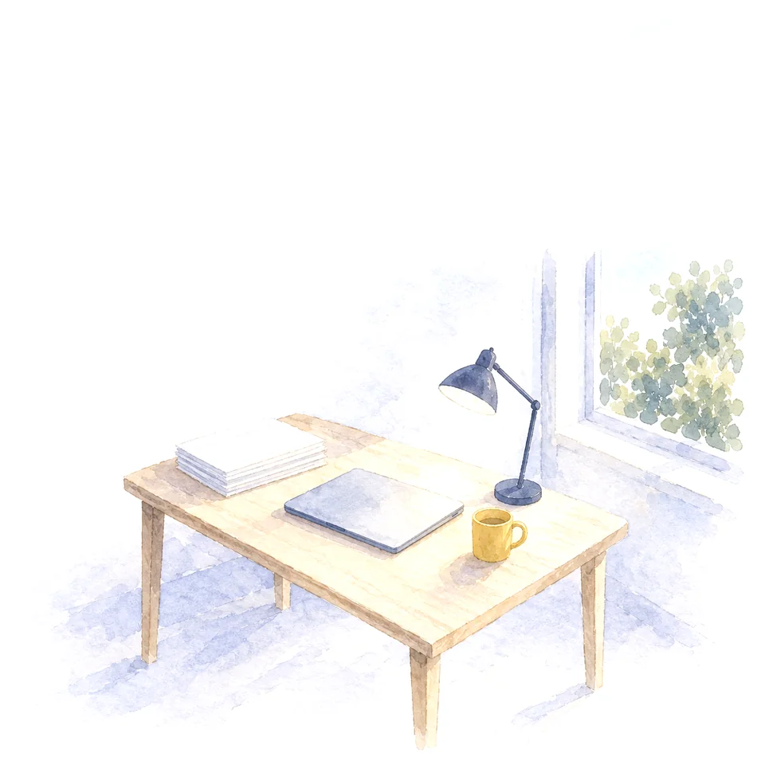
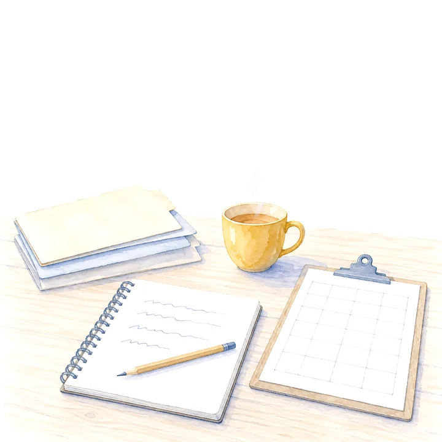
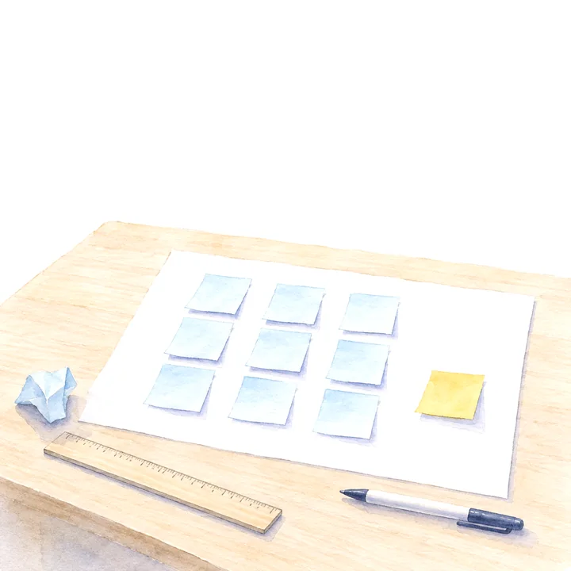
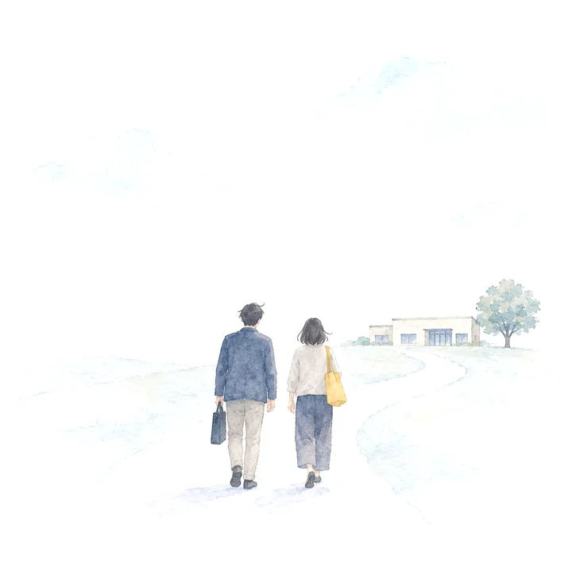
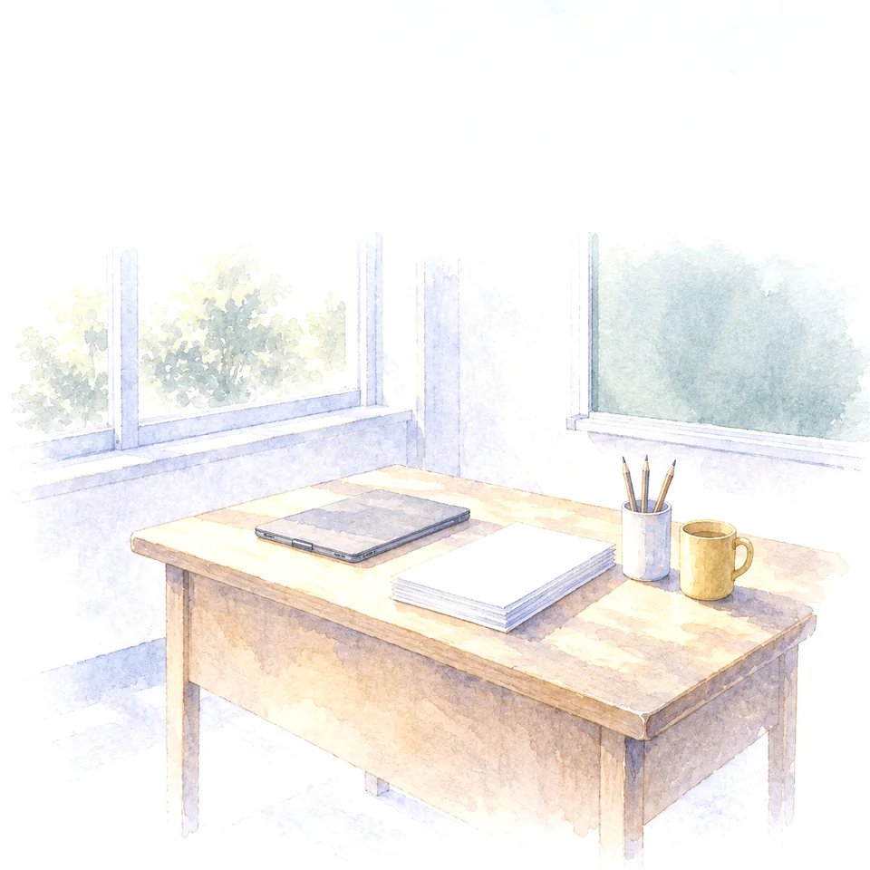
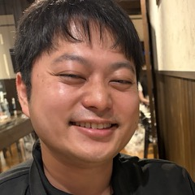

BUSINESS
事業所の方へ
見積書や書類づくりが、仕事のあとの残業になっていませんか。
- 見積書、台帳、申請書類の転記を減らす
- Google Workspace と生成AIを、仕事で使える形に
- 社内で直せる、小さな道具をつくる

どの仕事に、どれだけ時間がかかっているか。書類とやり方を見せていただき、聞き取りのシートで一緒に書き出します。

いちばん効きそうな1つの業務から始めます。何を残し、何をやめるかを決めて、小さな道具の形にします。

作って終わりにはしません。自分たちで直せるようになるまで、使い方を伝え、一緒に見直します。
大きな導入はしません。1つの業務から小さく始めます。

見積書や書類づくりが、仕事のあとの残業になっていませんか。

校務の時間を、授業の準備に戻したいと思っていませんか。
先生個人の方の教材のご相談は、School Stockの相談窓口で受けています。
すべて実際のご相談です。会社名とお名前は伏せています。
見積書を読み取って比較表にする道具と、議事録をつくる道具の作成を支援しました。道具は社内に残り、自分たちで直せます。
集めるたびに直す仕事がなくなりました。同じ型は、日報や見積書、報告書にもそのまま使えます。
地域を取材して社会科の副読本をつくりました。使った先生全員が「来年度も使いたい」と答えています（2026年7月・回答2名）。
過去問と法令から問題集をつくり、紙で解いて写真で採点する勉強の仕組みを一緒に組みました。
私がこの事業を始めようと思った理由があります。担任していた学級に、学校の力だけでは守りきれなかった子がいました。学校としてやれることはやりました。それでも、教員のままでは届かない領域があると知りました。
そこに手が届くだけの力を民間の立場でつけて、学校現場を変えていきたいと思っています。人を育てる側にいる人が、気持ちと、お金と、時間のゆとりを持ったまま育てていける。そのための仕事だけを受けます。
明日の仕事が楽しみになること、自分の仕事に誇りを取り戻すこと。人を育てる場所なら、どこでも同じだと思います。
LiFE with。共に生きていく、本当に生きる。その意味を込めています。

「パソコンが苦手」の人が使えるようになるまで教えるのが、学校での本業です。むずかしい言葉を現場の言葉に直して、その人のやり方に合う形で道具を渡す。それを10年続けてきました。